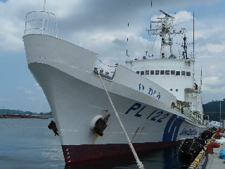
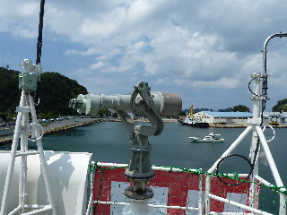
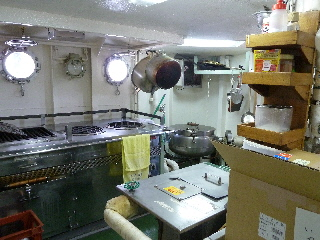
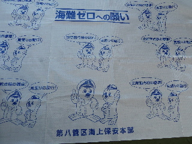
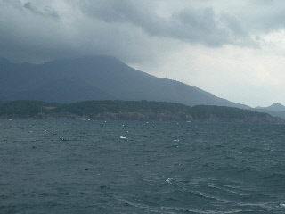
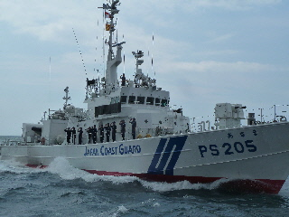
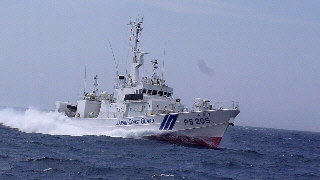
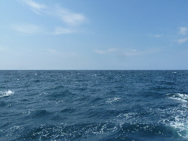
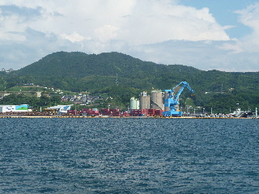

巡視船「いわみ」に乗船しました。
2013/08/04
巡視船「いわみ」の体験乗船に当たったので、浜田港に行きました。

これが「いわみ」です。
どんな航海になるか楽しみです。

まずは船内の見学です。

調理場や休憩室も見学しました。

受付でもらったレジャーシートです。
これを甲板に敷いて景色を見ました。

でも外は雨が降りそうな天気ですね。

巡視船の「あさま」が「いわみ」の周りを、くるくる何週も訓練で回りました。

サイレンを響かせながら、猛スピードで接近してくるので迫力がありました。
あさまが過ぎ去った後には、船の波がやってくるので船が大きく揺れて面白かったです。
大波が甲板に上がって来て、慌ててよけたりしました。
遊園地のアトラクションみたいな感覚で楽しめました。

帰るころには晴天になってて、すがすがしかったです。

浜田港に帰ってきました。
2時間くらい船の上で楽しめました。
また同じような体験乗船があったら応募しようと思います。